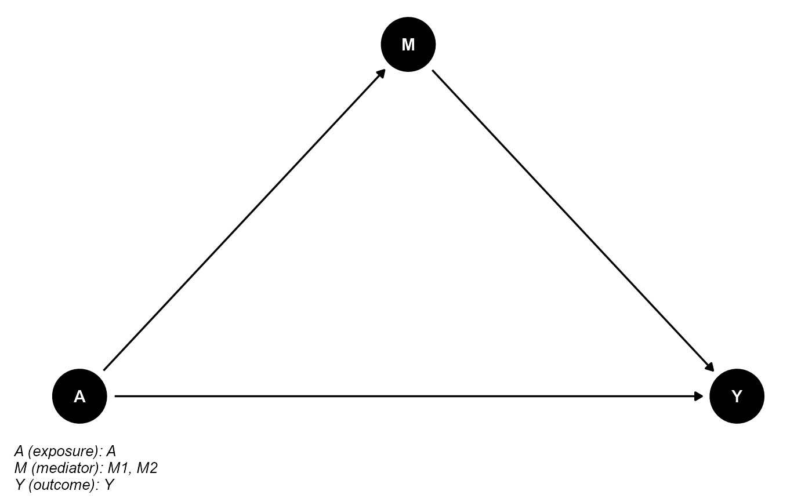
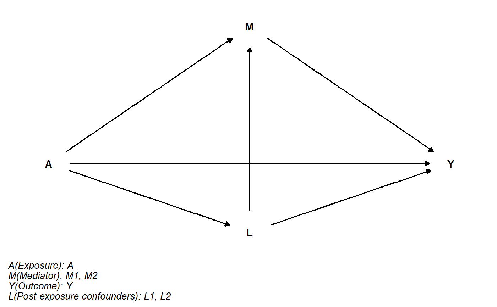

Plot the directed acyclic graph (DAG) for causal mediation analysis.
cmdag( outcome = NULL, exposure = NULL, mediator = NULL, basec = NULL, postc = NULL, x.outcome = 4, x.exposure = 0, x.mediator = 2, x.basec = 2, x.postc = 2, y.outcome = 0, y.exposure = 0, y.mediator = 1, y.basec = 2, y.postc = -0.5, caption.width = 50, caption.size = 10, ... )
| outcome | the variable name of the outcome |
|---|---|
| exposure | the variable name of the exposure |
| mediator | a vector of variable name(s) of the mediator(s) |
| basec | (optional) a vector of variable name(s) of the exposure-outcome confounder(s), exposure-mediator confounder(s) and mediator-outcome confounder(s) not affected by the exposure |
| postc | (optional) a vector of variable name(s) of the mediator-outcome confounder(s) affected by the exposure |
| x.outcome | x coordinate of |
| x.exposure | x coordinate of |
| x.mediator | x coordinate of |
| x.basec | x coordinate of |
| x.postc | x coordinate of |
| y.outcome | y coordinate of |
| y.exposure | y coordinate of |
| y.mediator | y coordinate of |
| y.basec | y coordinate of |
| y.postc | y coordinate of |
| caption.width | line width in characters for the caption. Default is |
| caption.size | text size in pts for the caption. Default is |
| ... | additional arguments passed to |
## basec and postc are empty cmdag(outcome = "Y", exposure = "A", mediator = c("M1", "M2"), basec = NULL, postc = NULL, node = TRUE, text_col = "white")## postc is empty cmdag(outcome = "Y", exposure = "A", mediator = c("M1", "M2"), basec = c("C1", "C2", "C3"), postc = NULL, node = FALSE, text_col = "black")## basec is empty cmdag(outcome = "Y", exposure = "A", mediator = c("M1", "M2"), basec = NULL, postc = c("L1", "L2"), node = FALSE, text_col = "black")## basec and postc aren't empty cmdag(outcome = "Y", exposure = "A", mediator = c("M1", "M2"), basec = c("C1", "C2", "C3"), postc = c("L1", "L2"), node = FALSE, text_col = "black")